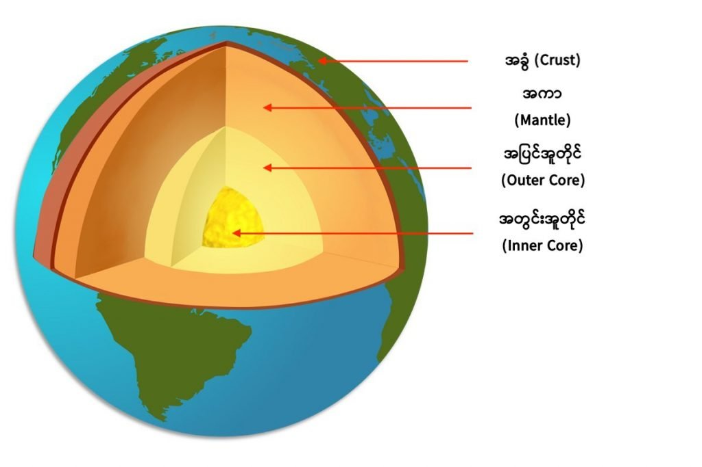
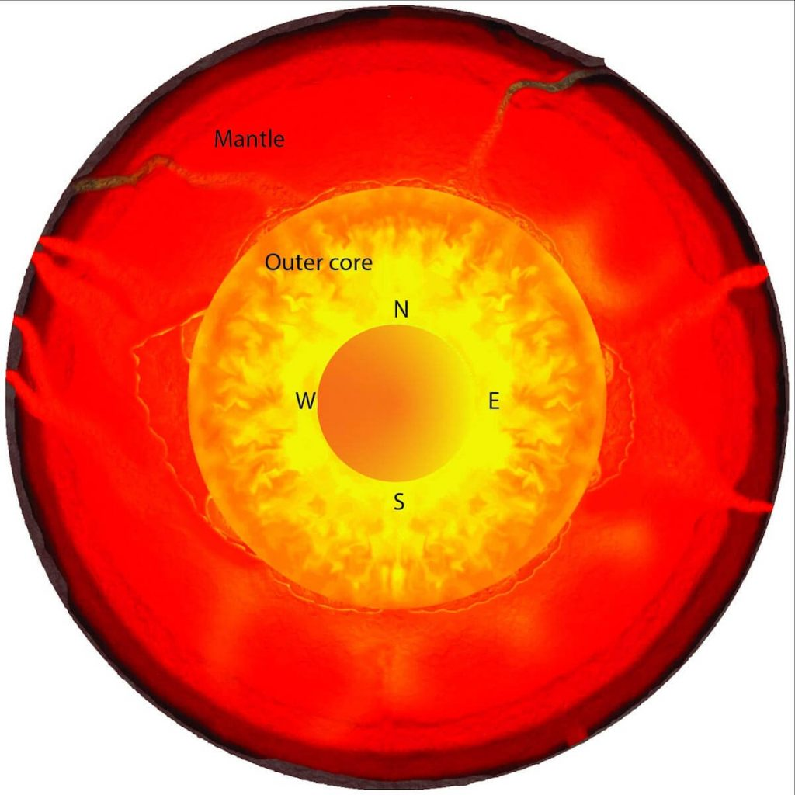

နောက် နှစ်သန်း အနည်းငယ် အကြာမှာတော့ ကမ္ဘာ့ မျက်နှာပြင် ပေါ်က ချော်ရည်ပူတွေဟာ တဖြည်းဖြည်း အေးလာကြပါတယ်။ ဒီလို အေးလာတာနဲ့ အမျှ ချော်ရည်တွေ အေးခဲပြီး ကမ္ဘာ့ မျက်နှာပြင်ကို ဖုံးအုပ်ထားတဲ့ အခွံမာ ဖြစ်လာပါတယ်။
ဒီလို ကမ္ဘာ့ မျက်နှာပြင် အပေါ်ယံ လွှာက အေးပြီး ခဲသွားတဲ့ အခါ ကမ္ဘာ့ အတွင်းပိုင်းက အပူတွေဟာ ပြင်ပ အာကာသ ထဲကို လွင့်ပျံထွက်ဖို့ အခြေအနေ မပေးတော့ပါဘူး။ ဒါ့ကြောင့် ဒီ အပူတွေဟာ ကမ္ဘာ့ အတွင်းပိုင်းမှာ ပိတ်မိနေ ခဲ့ပါတယ်။ ဒီ ပိတ်မိနေတဲ့ အပူတွေ ကြောင့်ပဲ ကမ္ဘာ့ အောက်ပိုင်းမှာ ရှိတဲ့ ကျောက်တွေဟာ ကျောက်ရည်ပူ (ချော်ရည်ပူ) တွေအနေနဲ့ ရှိနေတာ ဖြစ်ပါတယ်။
ကမ္ဘာ့ အတွင်းပိုင်းကို ကြည့်လိုက်ရင် ကြက်ဥ တစ်လုံးနဲ့ အလားတူ နေတာကို တွေ့ကြရမှာ ဖြစ်ပါတယ်။ အောက်ကပုံမှာ ပြထားသလိုပဲ အလယ်ဗဟိုမှာ ကမ္ဘာရဲ့ အူတိုင် ရှိနေပါတယ်။ ကြက်ဥရဲ့ အနှစ်လိုပါပဲ။ ဒီအူတိုင်မှာ အတွင်းပိုင်း (Inner Core) ဟာ သံတုံးကြီး ဖြစ်ပြီး အခဲအနေနဲ့ ရှိနေပါတယ်။ သူ့အပေါ်က အပြင်အူတိုင် (Outer Core) ကတော့ အရည်ပျော် နေတဲ့ အလွှာဖြစ်ပါတယ်။

ဆက်စပ်ဆောင်းပါး – ငလျင်ဘာကြောင့် လှုပ်တာလဲ
အပေါ်ယံလွှာ မာခဲသွားလို့ ပိတ်မိနေတဲ့ အပူတွေဟာ ကမ္ဘာ့ အူတိုင်ထဲမှာ အများဆုံး သွားစု နေပါတယ်။ အပူတွေက လုံးဝ အပြင်ကို မထွက်နိုင်တာတော့ မဟုတ်ပါဘူး။ ဒီ အပူတွေဟာ အူတိုင်က တဆင့် သူ့အပေါ်က အကာ အလွှာကို အပူကူးပြီး ရောက်လာကြတာပါ။ ဒီကမှ ကမ္ဘာ့ မြေမျက်နှာပြင်ပေါ်ကို မီးတောင်တွေ ရေပူစမ်းတွေ ကနေတဆင့် ထွက်လာပြီး အပူဆုံးရှုံးမှု ဖြစ်လာပါတယ်။
အခုထက်ထိ သိပ္ပံ ပညာရှင်တွေ မရှင်းလင်း သေးတဲ့ အချက်ကတော့ ဒီလို အပူ ဆုံးရှုံး နေတာ နောက်နှစ်ပေါင်း ဘယ်လောက်ကြာအောင် ဆက်ဖြစ်နေ အုံးမလဲဆိုတာပဲ ဖြစ်ပါတယ်။ တနည်းအားဖြင့် ကမ္ဘာမြေ အတွင်းပိုင်းကနေ အပူ ဆုံးရှုံးတာ ဘယ်လောက် မြန်သလဲ ဆိုတာ ဖြစ်ပါတယ်။
ဒီ အပူဆုံးရှုံးတဲ့နှုန်း၊ တနည်းအားဖြင့် အေးလာတဲ့ နှုန်းကို သိဖို့အတွက် ကမ္ဘာ့ အတွင်းပိုင်း အူတိုင်နဲ့ အပေါ်က အကာနဲ့ ထိတွေ့တဲ့ နေရာမှာ အမြောက်အများ တွေ့ရတဲ့ ဓါတ် သတ္တု တွေရဲ့ အပူ ကူးနှုန်း ကို လေ့လာ တွက်ချက် ကြည့်ဖို့ လိုလာပါတယ်။
ဒီ ထိစပ်တဲ့ နေရာက အတွင်းပိုင်းက အူတိုင်ရဲ့ အပူချိန်နဲ့ အပြင်လွှာ အကာက ကျောက်သားထုရဲ့ ကြားက အပူချိန် နှစ်ခု ကွားခြားမှုက အရမ်း များပါတယ်။ အတွင်းပိုင်းက အူတိုင်က အရည်ပျော်နေတဲ့ ကျောက်တွေက အရမ်းကို ချစ်ချစ်တောက် ပူနေပေမယ့် သူနဲ့ ထိစပ်နေတဲ့ အကာ နေရာက ကျောက်ကျောလို ဖြစ်နေတဲ့ ကျောက်တွေကျတော့ အောက်က ကျောက်ရည်ပူ တွေလောက် ပူပြင်း မနေတာကို သိပ္ပံ ပညာရှင်တွေ သတိပြုမိ ကြပါတယ်။

ဆက်စပ်ဆောင်းပါး – ကမ္ဘာ့ ဗဟိုချက် အေးခဲသွားရင် ဘာဖြစ်လာမလဲ
သုတေသီ တွေဟာ ဒီအလွှာရဲ့ အပူ ကူးနှုန်း ဘယ်လောက် ရှိမလဲ ဆိုတာကို တိုင်းထွာနိုင် ခဲ့ခြင်း မရှိခဲ့ပါဘူး။ ဒီလောက် အနက်မှာ ရှိတဲ့ အပူကူးနှုန်းကို တိုက်ရိုက် တိုင်းနိုင်ခြင်း မရှိတာကြောင့် ဒီအလွှာကို ဖွဲ့စည်းထားတဲ့ ဒြပ်ပေါင်းတွေနဲ့ အလွှာတု ပြုလုပ်ပြီး ဓါတ်ခွဲခန်းမှာ တိုင်းတာဖို့ ကြိုးစားမှု တွေကလဲ မအောင်မြင်ခဲ့ပါဘူး။
ဒါပေမယ့် အခုတော့ ကာနေဂီ သိပ္ပံ သုတေသန ဌာန (Carnegie Institution for Science) က သုတေသီ ပါမောက္ခ မိုတိုဟီကို မူရာကာမီ (Professor Motohiko Murakami) နဲ့ အဖွဲ့ဟာ ဒီ အလွှာရဲ့ အပူကူးနှုန်းကို ဓါတ်ခွဲခန်းမှာ အောင်မြင်စွာ တိုင်းထွာ နိုင်ခဲ့ကြတယ်လို့ ဆိုပါတယ်။
သူတို့ဟာ ဒီ bridgmanite ဒြပ်ပေါင်းတွေကို ကမ္ဘာ့ မြေထုအောက် ထဲမှာ ရှိမယ့် အပူချိန်နဲ့ ဖိအား အတိုင်း ဓါတ်ခွဲခန်း ထဲမှာ ဖန်တီးပြီး တိုင်းထွာခဲ့တာ ဖြစ်ပါတယ်။ အရင်က ဒီလို အပူချိန် နဲ့ ဖိအား အခြေအနေမျိုးမှာ အပူကူးနှုန်းကို တိုင်းတာနိုင်စွမ်း မရှိခဲ့ ကြပါဘူး။ ဒီ့အတွက် သူတို့ဟာ လေဆာရောင်ခြည်သုံး အပူချိန် တိုင်းတာရေး နည်းလမ်း အသစ်ကိုလဲ တီထွင် ခဲ့ကြပါတယ်။
သူတို့ရဲ့ တိုင်းတာ ချက်အရ ဒီ ဒြပ်ပေါင်းဟာ မူလက ထင်မှတ် ထားခဲ့တာထက် အပူကူးနှုန်း ၁ ဆခွဲ ပိုမြန်နေတာကို တွေ့ခဲ့ကြရပါတယ်။ ဒါဟာ ဘာကို ပြနေလဲ ဆိုတော့ ကမ္ဘာ့ အတွင်းပိုင်း ကနေ အပေါ်ယံ လွှာကို အပူကူးနှုန်းကလဲ မူလက ထင်မှတ် ထားခဲ့တာထက် ပိုမြန်မယ် ဆိုတာပဲ ဖြစ်ပါတယ်။
ဒီ လို အပူကူးနှုန်း ပိုမြန်တဲ့ အတွက် ကမ္ဘာ့ အတွင်းပိုင်းက အပူ ဆုံးရှုံးတဲ့ နှုန်းကလဲ မူလ ထင်ခဲ့တာထက် ပိုများနေမှာ ဖြစ်ပါတယ်။ တနည်းအားဖြင့် အပူ ဆုံးရှုံးမှု များလေလေ ကမ္ဘာ့အတွင်းပိုင်း အူတိုင် အေးလာတဲ့ နှုန်းလဲ ပိုမြန် လေလေပဲ ဖြစ်ပါတယ်။
ဒီလို ကမ္ဘာ့အတွင်းပိုင်းက အပူချိန် လျှော့လာတဲ့ အကျိုးဆက် ကတော့ အတွင်းပိုင်းက ချော်ရည်ပူတွေရဲ့ စီးဆင်းမှု နှေးလာတာပါပဲ။ ချော်ရည်ပူတွေ စီးဆင်းမှု နှေးလာတဲ့ အတွက် ကမ္ဘာ့ ကုန်းမြေ ကျောက်ထုလွှာ တွေရဲ့ ရွေ့လျားမှုလဲ တဖြည်းဖြည်း နှေးလာမှာ ဖြစ်ပါတယ်။
ဒီ သုတေသနရဲ့ နောက်ထပ် တွေ့ရှိချက် တရပ်ကတော့ bridgmanite ဒြပ်ပေါင်းဟာ အပူချိန် ကျလာတဲ့ အခါမှာ အခြား ဒြပ်ပေါင်း တစ်မျိုးအဖြစ် ပြောင်းသွားတယ် ဆိုတာပဲ ဖြစ်ပါတယ်။ ဒီ အသစ်ဖြစ်လာတဲ့ ဒြပ်ပေါင်းရဲ့ အပူကူးနှုန်းကဆို ပိုလို့တောင် မြန်ပါသေးတယ်။ သုတေသီ တွေက ဒီ ဒြပ်ပေါင်း အသစ်တွေ များလာတာနဲ့ အမျှ ကမ္ဘာ့ အတွင်းပိုင်းကနေ အပြင်လွှာကို အပူကူးတဲ့ နှုန်းကလဲ ပိုပြီး မြန်လာမှာ ဖြစ်ပါတယ်။
“ကျွန်တော်တို့ရဲ့ တွေ့ရှိချက်အရ ကမ္ဘာ့ အူတိုင်ဟာ ဗုဒ္ဓဟူးဂြိုဟ်တို့ အင်္ဂါဂြိုဟ်တို့ရဲ့ အတွင်းအူတိုင် လိုပဲ တဖြည်းဖြည်း အေးလာနေပါတယ်။ ဒီလို အေးလာတဲ့ နှုန်းကလဲ အရင်က ထင်ထား ခဲ့တာထက်ကို ပိုပြီး မြန်နေပါတယ်။” လို့ ပါမောက္ခ မူရာကာမီ က ပြောပါတယ်။
ဒါပေမယ့် ကမ္ဘာ့ အတွင်းပိုင်း လုံးဝ အေးခဲသွားဖို့ အချိန်ဘယ်လောက် ကြာမလဲ ဆိုတာကိုတော့ တွက်ချက်နိုင်စွမ်း မရှိကြ သေးပါဘူး။ ဘာ့ကြောင့်ဆို ကမ္ဘာ့ အတွင်းပိုင်း လေးလာတဲ့ နှုန်းက အပူးကူးမှု တစ်ခုထဲ ကြောင့် မဟုတ်ပဲ အခြား အကြောင်းတွေလဲ ပါဝင်နေပါတယ်။ ဒီမေးခွန်းကို အတိအကျ ဖြေနိုင်ဖို့ဆို နောက်ထပ် သုတေသန အများအပြား ပြုလုပ်ရအုံးမှာ ဖြစ်တယ်လို့ ဆိုပါတယ်။
Reference: Earth’s interior is cooling faster than expected | Science Daily